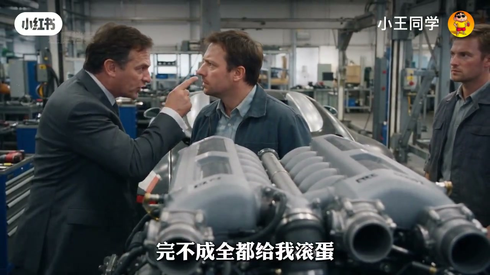
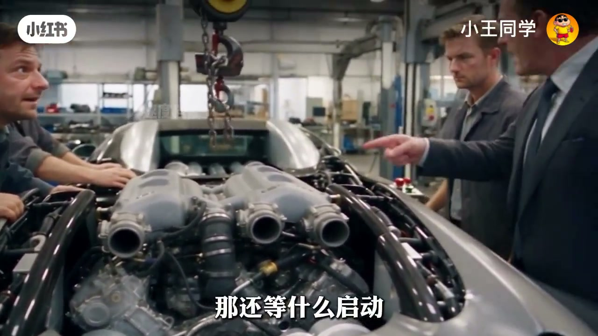
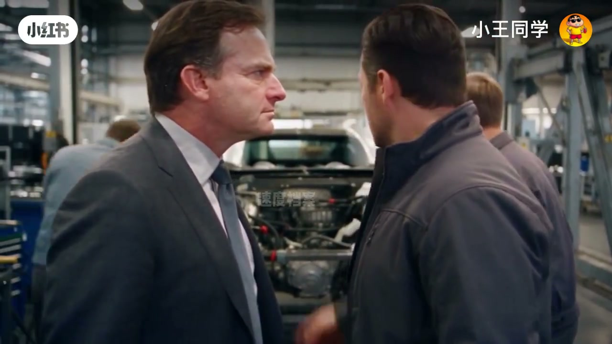
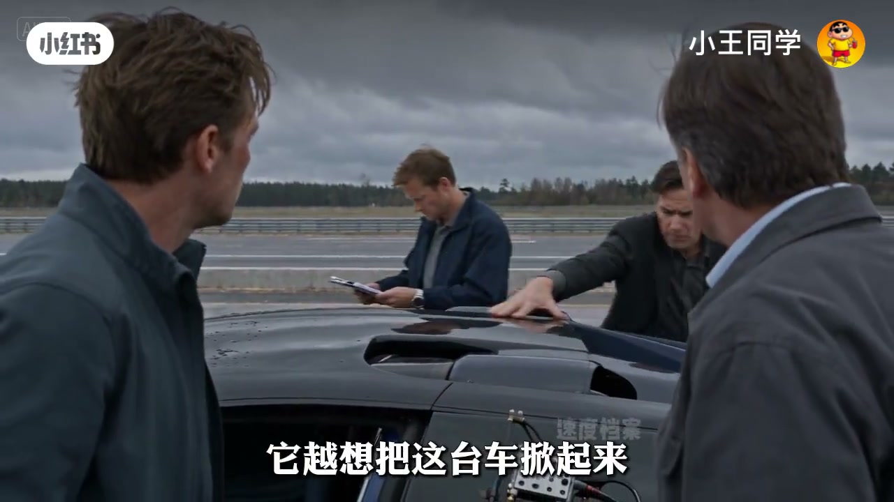
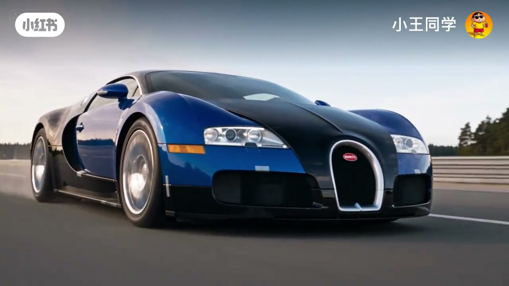

内容要点
短剧重演布加迪威龙研发压迫感：老板限一个月把巨大的W16塞进车身，工程师被迫改涡轮布局、冷却、变速箱、制动、轮胎与空气动力。马力过千之后，真正挡在四百公里前面的是散热、传动与高速升力——最后车身贴地，速度过四百，名字落下：Veyron（威龙）。
知识结构
W16体积巨大；涡轮、进排气与冷却迫使「重新设计半辆车」。
负荷上来温度失控；散热器与热管理重做才摸到一千马力以上。
传动匹配、制动轮胎、空气动力：高速越想把车掀起来。
悬架气流再优化后破四百；十六缸四涡轮的系统工程收束。
超跑破四百的叙事重点不是「再加马力」，而是让动力、散热、传动、制动与空气动力在同一极限工况下同时成立。
00:00-00:50一个月：把发动机塞进去
老板下达军令状：一个月内把W16塞进布加迪车身，「完不成全都给我滚蛋」。工程师反问散热与变速箱怎么办，得到的回答是「那是你们的问题」——戏剧化地写出目标刚性、约束外移。
拆车后立刻撞墙：本体能进，四个涡轮、进排气与冷却管路没位置。老板一句「那就重新布置」「再改半台车也改」——塞发动机变成改整车架构。


00:50-02:00先别烧死它：冷却换一千马力
装上后启动拉负荷，又急停：温度失控，「再这么跑下去别说四百公里，发动机先废」。W16把后舱塞满，散热空间本身就是对手。
团队加散热器、重走冷却与热管理管路，「刚给它找完位置，还得给它找地方喘气」。功率上来超过一千马力后，下一关立刻变成变速箱与传动能不能扛住一脚油门。


02:00-03:52四百公里：空气要把车掀起来
能跑还不等于能到四百：制动、高速稳定、轮胎全部要按四百公里重算。实测卡在三百九十几——马力、底盘、轮胎都改过仍上不去，因为「空气速度越高越想把车掀起来」。
于是重做空气动力，让高速下压力把车压住；悬架与轮胎继续测。画面里速度三百九十、越三百九十九，最终过四百。收尾回顾：第一天说塞不进去，后来车扛不住，空气作对，可它还是过了——十六缸、四涡轮、千马力以上、四百公里以上，现在它叫威龙。

完整转录（140段）
以下文本由 Whisper medium 模型自动转录，可能存在少量识别误差，已尽可能修正。
一个月
我要你们在一个月的时间内把这台W16发动机给我塞进这台布达迪的车身里
一个月 你看看这东西有多大
别告诉我完不成 完不成 全都给我滚蛋
塞进去可以 散热怎么办 变速箱怎么办
那是你们的问题
一个月以后 我要听见他在这里面响
拆车
停
又怎么了 发动机本体能进去
可四个涡轮往哪放
进排器也没位置
还有冷却管路
那就重新布置
你说重新布置就重新布置
再往里压半台车都得跟着改
那就改
为了塞一台发动机
你让我重新设计半辆车
不然我找你来干什么
发动机重新定位 管路重新走 后部结构重新算
你不是非要塞吗
今天我就塞给你看
进去了
那还等什么 启动
负荷上来了
继续
停
为什么停
因为它快把自己烧死了
温度多少
再这么跑下去 别说四百公里 发动机先废
那就给它降温
拿什么降
W6已经把后面塞满了
我不要理由
我要它活着输出一千马力
行 散热器增加
冷却管路重新走
热管里全部重做
刚给它找完位置
现在还得给它找地方喘气
上去了
多少
超过一千马力
装车 出去跑
跑个屁
你又怎么了
这是一千马力
发动机扛住了
变速箱扛得住吗
传动系统也得重新匹配
那就匹配
一脚油门下去真炸了呢
炸哪改哪
那你告诉我怎么验证
拿实车往死里侧
那还废什么话
把车放下来
怎么样
动力扛住了
那就继续加速
加什么加
能跑了
可真到四百公里
你拿什么把它停下来
制动重做
还有高速稳定
还有轮胎
全部按四百公里重新算
你知道这意味着什么吗
整台车都得重新调
制动不够就改制动
底盘不稳就改底盘
轮胎扛不住就继续测
我要的是四百公里
还能控制住
多少
还是不够
为什么
以前马力有了
底盘改了
轮胎也换了
为什么就是上不了四百
因为现在根本不是发动机的问题
那是什么
空气速度越高
它越想把这台车掀起来
再硬冲只会越来越危险
那怎么办
重新做空气动力
让它在高速的时候压下去
那就改
再加上
我说要它从哪里
超过四百公里给我回来
它还有余量
我还能继续加马力
别再给我加了
为什么
现在缺的不是动力
是让它在四百公里的时候
死死贴住地面
悬架重新调
轮胎再测
车身气流重新优化
W十六呢
一千马力以上
我保证稳定
好
谁都不许给我降目标
这次再不过呢
那我回来继续跟你们吵
速度
三百九十
几时
车身稳定
三百九十九
过了
超过四百
底盘扛住了
这次
他没跟我们吵
怎么样
还有最后一步
把它真正造出来
还记得第一天吗
你非让我把它塞进去
你说塞不进去
后来塞进去了
发现车扛不住
最后连空气都跟我们作对
可它还是过了四百
十六个缸
四个涡轮
一千马力以上
四百公里以上
现在呢
现在
它叫Vero